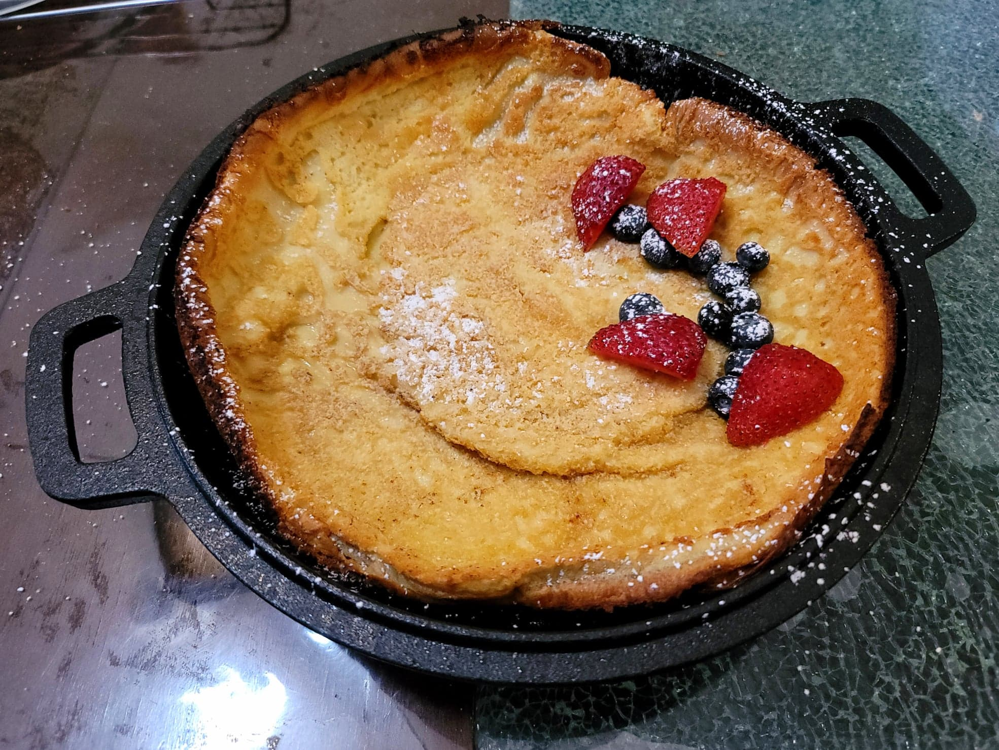

Dutch Baby

Ingredients:
Dutch Baby:
- 3 tbsp Butter
- 1/2 cup (60g) Flour
- 1/2 cup Milk
- 3 large Eggs
- 1 tbsp Maple syrup
- 1/2 tsp Vanilla extract
- 1/4 tsp Salt
Toppings:
- Powdered sugar
- Maple syrup
- Fresh berries
- Jam or Jelly
Instructions:
- Place a 10-inch cast iron skillet into an oven and preheat the oven to 400 degrees Fahrenheit.
- While the oven preheats, blend or whisk together all of the ingredients except for the butter.
- Once preheated, place the butter onto the pan and let melt for about 90-120 seconds. Then pour in the batter and let bake for 20 minutes.
- Remove from the oven. Dust with powdered sugar and top with any other desired toppings. Serve immediately.